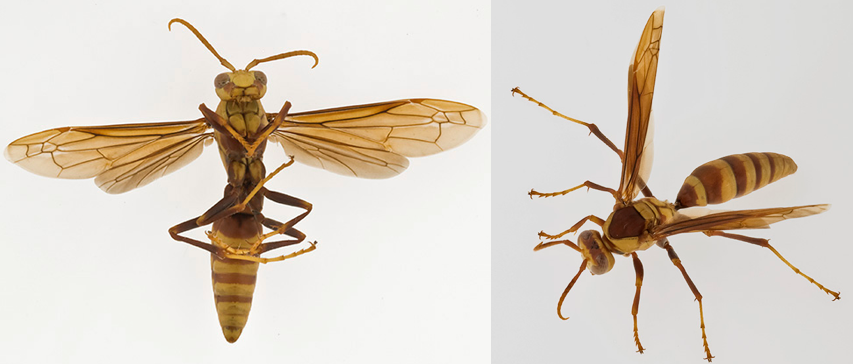

Polistes major es una avispa social de cuerpo alargado, generalmente de coloración amarilla y negra, con patas largas y cintura estrecha. Construye nidos de papel mediante fibras vegetales mezcladas con saliva, generalmente suspendidos en superficies protegidas. Es depredadora de otros insectos, especialmente orugas, por lo que contribuye al control biológico de plagas agrícolas.